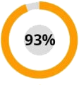

Profesor Najduch: "Prečo sa staráte o kĺby celé roky, keď ich možno obnoviť za mesiac!"
O príspevku profesora Najduchu k liečbe ochorení kĺbov a ako získať liek na obnovu kĺbov zadarmo, prečítajte si článok

V roku vykonal výskumný tím pod vedením profesora Najduchu sériu laboratórnych testov inovatívneho lieku na kĺby. Výsledky prevýšili všetky očakávania. Porovnávacia analýza drogy vyvinutej profesorom s populárnymi lekárňami tiež nepochybovala - v reumatológii je nová éra! Výskumníci požiadali o registráciu lieku a žiadosť o začatie výroby. Ale potom sa stalo nešťastie - profesor Najduch opustil tento svet. Teda liek nebude v predaji? Túto otázku položil náš korešpondent hlavnému reumatológovi Ministerstva zdravotníctva Slovenskej republiky Jozef Ráž, ktorý sa tiež významne podieľal na výskume tejto drogy.
Komentár od hlavného reumatológa Ráž. "Prvý šok po strate profesora prešiel a išli sme na to, aby ukončili ulohu celého jeho života"
Korešpondent: "Dobrý deň, Jozef. Ako sa veci vyvíjajú dnes?"
Jozef Ráž: dobrý deň, Kuzma. Som rád, že môžem oznámiť, že po všetkých testoch bolo prijaté povolenie na zavedenie lieku do systému liekov. Nazvali sme drogu Ostelife, pretože hlavnou účinnou látkou v nej sú parohy z altajského marala.
Klinické štúdie Ostelife ukázali jeho vysokú účinnosť pri liečbe kĺbov - podľa najkonzervatívnejších odhadov tento liek predĺži priemerný život ľudí s chorobami kĺbov najmenej 10 rokov!
Korešpondent: "Jozef, mohli by ste nám povedať, ako sa Ostelife líši od zvyčajných farmaceutických prostriedkov?"
Jozef Ráž: Pacientom s ochoreniami kĺbov sa spravidla predpisuje jeden z nasledujúcich liekov:
- Diprophos;
- Diclofenac;
- Dexametazón;
- Alflutop;
- Movalis;
- Mydocalm;
- Meloxicam;
- Prednizolón;
- Teraflex;
- Aertal;
- Hondrogard;
- Artritída;
- Artrozan;
- Fermatron;
- Celebrex;
- Diafleks;
- Hondrolon;
- Sirdalud;
- Ketorolac;
- Hondroksid;
- Flamaks;
- Alopurinol;
- Flexen;
- Alflutop;
- Fermatron plus;
- Artrozilen.
Pozrime sa na komplikácie, ktoré môžu viesť k chorobám kĺbov. Ak zoberieme najčastejšie ochorenia kĺbov, sú to:
| Ochorenie | Včasné komplikácie | Komplikácie v pokročilom štádiu |
|---|---|---|
| Artritída | Nekróza chrupavky, deštrukcia kĺbov, synovitída | Úplné zničenie kĺbov, sepsy, rakoviny kĺbov |
| Artróza | Zápal chrupavky, zmeny v štruktúre a degradácii kĺbov, existuje riziko infekcie krvi | Postihnutie (zlyhanie kĺbov), deštrukcia tkaniva chrupavky, rakovina kĺbov |
| Osteochondróza | Medzistavcové výčnelky, posun medzistavcových platničiek, nervy | Hernie chrbtice, poruchy centrálneho nervového systému (centrálny nervový systém), existuje riziko zlyhania jednotlivých orgánov, rakovina chrbtice |
| Koxartróza | Rast kostí, degeneratívne zmeny v chrupavke a kĺboch, dystrofické zmeny v kĺbových vakoch | Obmedzenie motorickej aktivity (postihnutie 1 alebo 2 skupiny), rakovinových nádorov |
| Osteoporóza | Umieranie spojivového tkaniva, nekróza kostí (zvyšuje krehkosť kostí) | Deformácia jednotlivých kostí a kostra ako celku, zlyhanie končatín, existuje riziko vzniku rakoviny v dôsledku nekrózy kostí |
| Burzitída | Zápal periartikulárneho synoviálneho vaku, akumulácia hnisavého exsudátu | Krvná infekcia, zlyhanie kĺbov, zhnitie svalového tkaniva, zhubné nádory |
| Dna | Zápal kĺbov nôh, usadzovanie soli, koncentrácia v kostiach močových kryštálov | Tvorba kosti na nohe a jej rast, zmena veľkosti kĺbu, nekróza kostí nôh, výskyt benígnych nádorov |
Ako vidíte, viete, kde je to veľmi časté. Posledné 100 rokov, zaťaženie kostry osoby zvyšujúce rastie. Výsledok je, že každý, kto vo veku 25 rokov, má 1 - 2 hodnotené cieleby. Vo veku 35-40 rokov sa vyskytujú choroby sťahujúce sa do krajiny, v ktorej sa vyskytujú závažné komplikácie.
Z vizuálneho vyšetrenia získajte tieto fotografie zhotovené v nemocnici:
1. Kolenný kĺb osoby s artrózou, ktorá bola liečená "klasickými" spôsobmiami. Injekcia na nejaký čas mu dali akékoľvek necítiť bolesť. Ale nebránili rozvoju choroby. Výsledkom bola amputácia nôh. Človek navždy postihnutý.

2. Dôsledky osteochondrózy, ktoré sú v liečebných postupoch, boli anestetizované. Celkom z prietrže sa stali 2 rakovinové nádory. Pokúsili sa zachrániť pacienta chirurgickým zákrokom, ale bohužiaľ to nepomohlo, žena zomrela.

3. Dôsledky artritídy ruky. Ako viete, že už nie je možné očakávať, že existuje zápalný proces a strata sepsy. Pacientovi bola amputovaná ruka a časť ruky. Ale nezachránil ho, sapsal a rozširilla do zvyšku tela a muža, ktorý zomrel po intenzívnej intenzívnej liečbe.

A teraz vrátime konverzáciu v pozitívnom smere. Profesor Najduch spolu s lekárskym výskumom študoval alternatívnu medicínu už desaťročia, najmä sibírske tajomstvá dlhovekosti a zdravia. Všetky znalosti profesora a výskumné skúsenosti výskumných ústavov sú spojené v prípravke, ktorý sme dali do predaja - Ostelife. Prírodné zložky a výťažky, ktoré Ostelife obsahuje, boli schopné poskytnúť KĽÚČOVÝ FAKTOR liečby - plné zásobovanie postihnutého kĺbu krvou . Je jednoducho potrebné zabezpečiť obnovenie krvného zásobovania, aby sa zastavila nekróza a zápal, pričom sa zároveň začne proces regenerácie. Problém je v tom, že to znie jednoducho, ale v praxi to nikdy nebolo možné realizovať pred niektorou z existujúcich možností liečby. Takáto droga existuje a navyše po ukončení klinických skúšok je distribuovaná bezplatne v rámci špeciálneho programu.
Pred výberom lieku na distribúciu v rámci programu sa uskutočnili rozsiahle klinické štúdie. Na nich sa zúčastnilo 10 120 ľudí z rôznych vekových skupín a s rôznymi chorobami kĺbov. 93,8% úplne vyliečilo svoje choroby. 5,6% má stále určité problémy, ale vo všeobecnosti sa ich stav výrazne zlepšil. Hrubo povedané, ak niekto mal ťažkú artritídu a sotva mohol chodiť, potom po absolvovaní kurzu mal v kĺbe len periodickú miernu bolesť. A len na úrovni 0,6 bolo zlepšenie stavu podstatné, ale nepostačovalo na to, aby sa im prisúdilo, že sa úplne uzdraví.
Reportér: "Nezmýlil som sa? Naozaj distribuujete tento zázračný liek z 50% zľavou?"
Jozef Ráž: Áno, naozaj je to tak. Na pamiatku profesora Najduch sme po ňom zorganizovali fond, ktorý dostal štátne financovanie a spustil spoločný program rehabilitácie. Program bol pridelený 324 miliónov eur od štátu a 27 miliónov z komerčných fondov Výskumného ústavu reumatológie. Preto máme možnosť distribuovať "Ostelife" za 35 eur, za plnú cenu v 70 eur za obal. A áno - naozaj to funguje. Osobne som kontroloval klinické skúšky a môžem vám potvrdiť, že liek je veľmi účinný.

Chcem ukázať výsledky klinických štúdií lieku Ostelife. Príjemne prekvapili mnohých lekárov. Pre tých pacientov, ktorých kĺby často bolia, to bude skutočná spása:

Bolesť zmizla v krátkom období u 100% účastníkov štúdie.

Oprava chrupavky po absolvovaní Ostelife - u 98% účastníkov štúdie
Zbavili artritídy a artrózy po ukončení kurzu - v 93% účastníkov štúdie
A to sú obrázky kĺbov „pred“ a „po“ používaní Ostelife
Reportér: "Pôsobivé. Len nám povedzte, čo to znamená pre obyčajných ľudí s chorobami kĺbov?"
Jozef Ráž: To znamená, že moderná slovenská medicína urobila vážny prielom a vy môžete liečiť svoje choroby doma za jeden alebo dva mesiace. Ostelife nezmrzne, neymierňuje bolesť, "reštartuje" telo na bunkovej úrovni. Odstraňuje príčinu samotných bolestí a vracia kĺby, chrbticu do jej pôvodného, normálneho stavu. Pacient sa nielen zbaví symptómov, ale odstráni koreň ochorenia - oslabený pomalými, starými bunkami, krvným zásobovaním chrupavky.
Prvý deň Ostelife spúšťa systém regenerácie tela. No, zmierňuje bolesť, okamžite, to budete cítiť. Po 1,5 mesiaci užívanie sa liečba dokončí.
Reportér: "Ostelife pomáha len s niektorými špecifickými chorobami?"
Jozef Ráž: Nie, hovorím vám: pôsobí na bunkovej úrovni, obnovuje zásobovanie krvou. Lieči akékoľvek ochorenie spojené s kĺbmi a chrbticou: artróza a artritída, osteoporóza, reumatizmus, dna a ischias, a osteochondróza, vytesnenie stavcov. Akékoľvek ochorenie kĺbov v ktoromkoľvek štádiu.
Reportér: "Znamená to, že droga naozaj zbavuje všetkých týchto chorôb, a nie len odstraňuje bolesť?"
Jozef Ráž: Ostelife eliminuje bolesť v kĺboch (v počiatočných štádiách liečby) a úplne eliminuje ochorenie. Samozrejme, existujú aj iné možnosti liečby chorôb, ale spravidla ide o chirurgický zákrok a sú veľmi nebezpečné pre ľudí. Nehovoriac o tom, že náklady na operáciu na rovnakom kolennom kĺbe sa teraz len prevrátia a sú dostupné pre veľmi malý počet ľudí.

Skutočný certifikát
Reportér: "Ako ľudia môžu získať Ostelife program pre akciu? Môže to niekto urobiť?"
Jozef Ráž: Áno, absolútne každý. Existuje len jeden " ale " - vzhľadom na malé objemy výroby program funguje selektívne. Zatiaľ čo v núdzi, môže požiadať a prijať "Ostelife" na sklade. Všetko, čo je potrebné, je nechať svoje meno a telefónne číslo, kde vás môžu kontaktovať zamestnanci Poradenského centra programu.
Reportér: "Aké časové obdobie bude program fungovať?"
Jozef Ráž: Koniec programu - (vrátane). Až do tohto dátumu je treba zanechať objednávku na „Ostelife“. Ak ste to ešte neurobili, odporúčam vám, aby ste sa ponáhľali, pretože potom nebude možné dostať liek zadarmo. Osobne zaručujem, že všetky žiadosti, ktoré zostali pred týmto časom, budú spracované a ľudia budú túto možnosť dostávať.
Jozef, ďakujem za rozhovor! Možno chcete našim čitateľom niečo povedať skôr, ako sa rozlúčime?"
Jozef Ráž: Áno, samozrejme. Chcem upozorniť čitateľov, že choroby chrbta a kĺbov sú „mladšie“, a dokonca aj slabé periodické bolesti sú dôvodom, aby sa tomuto problému venovala pozornosť. Lekár Vás nebude presvedčiť, aby ste sa liečili. Ako sa hovorí, Záchrana utopujúceho človeka je dielom samotného utopujúceho človeka.
A pamätajte: choroby spôsobené s bolesťou chrbta a kĺbov, neprinášajú len nepríjemné pocity. Skrátia životnosť o 15-20 rokov.
Buďte opatrní pred falzifikátmi! Pôvodný program "Ostelife" možno získať výhradne na oficiálnych stránkach

Pripomíname, že program platí len do vrátane.
Páči sa vám tento článok? Zdieľajte so svojimi priateľmi!


S rešpektom, J. Ráž


S rešpektom, J. Ráž
S rešpektom, J. Ráž


Sú tu výborné podmienky, pohahľajte sa!
Kúpila som ho na oficiálnej stránke ,zavolali mi veľmi rýchlo a potvrdili objednávku. Chcem konečne chodiť bez bolesti chrbta a užiť si turistiku)


S rešpektom, J. Ráž

S rešpektom, J. Ráž


A pozor, prosím, na falzifikáty.
S rešpektom, J. Ráž

Začalo overovanie zneužívania v systéme zdravotnej starostlivosti.

G. Svoradová: "Ako nový riaditeľ farmaceutického reťazca Euroapotheca sľubujem, že budeme pracovať čestne"

Artritický pacient musel amputovať nohu
100 244 ľudí prišlo o prsty kvôli bolestiam kĺbov

Aká je zložitosť operácie kolena